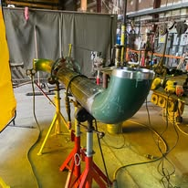

Gas line installation in Boynton Beach is licensed work for a reason. A joint that is slightly under-torqued or a line sized one step too small will run for months before it becomes a problem, and gas problems are not the kind you get to fix twice. We run gas line repair and installation from licensed plumbers in Boynton Beach and across the county, including Wellington and West Palm Beach.
We install and repair natural gas and propane lines for ranges, cooktops, dryers, water heaters, pool heaters, outdoor kitchens and standby generators. Every line is sized for the appliance load, pressure tested, and inspected under permit.
If you smell gas right now, leave the house, do not touch light switches, and call the gas utility from outside. Then call us for the repair.

Warning signs
Signs of a Gas Leak or Failing Gas Line
Gas leaks are not always dramatic. These are the quiet warnings.
- A rotten egg or sulfur smell near an appliance
- A hissing sound at a connection or meter
- Dead or discolored grass along the buried line route
- Appliance flames burning yellow or orange instead of blue
- Higher gas bills with no change in usage
- Soot marks above a range or water heater
- Headaches or nausea that improve when you leave the house
- A pilot light that will not stay lit
If you smell gas indoors, leave immediately and call from outside. Do not flip switches, use a phone indoors, or light anything.
What the visit includes
Gas Line Installation, Repair and Leak Testing Services
From a single appliance connection to a full outdoor kitchen and generator supply.
Load sizing
We calculate BTU demand for every appliance on the run so the pipe diameter supports them all at once.
New installation
Black iron, CSST or polyethylene for buried runs, installed with proper supports, sleeves and shutoffs.
Leak testing
Pressure test held and documented, plus electronic leak detection at every joint before the line goes into service.
Repair and replacement
Corroded sections replaced, failed valves swapped, and old undersized runs upgraded to current code.
Adding a gas appliance?Call for a load-sized quote covering pipe, testing and the permit.

Sizing
Gas Line Sizing for Ranges, Pool Heaters and Standby Generators
Undersized gas pipe is the most common fault we find, and it does not announce itself. Everything works until two appliances run at once.
How sizing actually works
Every appliance has a BTU rating. Pipe diameter is chosen from the total demand, the length of the run and the number of fittings, so pressure at the furthest appliance stays within spec while everything operates simultaneously. Adding a pool heater to a line sized for a range and dryer usually means upsizing the run, not just teeing into it.
Typical demands
A range draws roughly 60,000 to 90,000 BTU, a tankless water heater 150,000 to 200,000, a pool heater 250,000 to 400,000, and a standby generator can exceed all of them. These add up quickly.
Symptoms of an undersized line
Yellow instead of blue flames, a pool heater that fails to reach temperature, a generator that stumbles under load, or appliances that work individually but not together.
Materials
Black iron for exposed interior runs, bonded CSST where flexibility is needed, and polyethylene for buried lines. CSST must be properly bonded to the electrical grounding system, a step installers sometimes miss.
Every line is tested
A pressure test is held and documented, then every joint is checked electronically before the line goes into service. Neither step is optional on gas work.
Boynton Beach conditions
Gas Service in Boynton Beach: What to Expect
Much of Boynton Beach is all-electric. Natural gas is available on some streets and not on others, so the first question on any project is whether the street has service. Where it does not, propane is the standard alternative, with a tank set either above ground or buried.
Propane changes the details. It runs at a different pressure than natural gas, appliances need the correct orifices, and regulators must be sized to the tank and the load. Appliances converted incorrectly are one of the more common problems we find in this area.
Corrosion is the local maintenance issue. Buried steel in Florida's damp, sandy soil degrades faster than it does inland, and coastal humidity attacks exposed fittings on outdoor kitchens and pool heaters. Any line older than 20 years near the water is worth a pressure test even without symptoms.
Local supply
Natural Gas and Propane Availability Around Boynton Beach
The first question on any gas project here is whether your street has service at all, because much of the city is all-electric.
Checking availability
We verify natural gas availability with the utility before quoting. Where the main does not reach your street, propane is the standard alternative with a tank set above ground or buried.
Propane is not a drop-in substitute
It operates at a different pressure and appliances need the correct orifices for it. Incorrectly converted appliances are one of the more common problems we find in this area, and they burn inefficiently and unsafely.
Tank sizing and placement
Tank size follows total appliance load and how often you want deliveries. Placement has setback requirements from structures and property lines, and in coastal areas corrosion protection matters for buried tanks.
Corrosion in Florida soil
Buried steel degrades faster in damp sandy soil than it does inland, and coastal humidity attacks exposed fittings on outdoor kitchens and pool heaters. Any line over twenty years old near the water is worth a pressure test even with no symptoms.
Storm season preparation
After any excavation, storm damage or tree removal near a buried line, have it tested. Ground movement and root disturbance are quiet causes of gas leaks.
Pricing
Gas Line Installation and Repair Cost in Boynton Beach
Gas work is quoted per project after we measure the run and calculate the load. Short appliance connections are inexpensive. Long buried runs to a pool heater or generator cost more because of trenching and materials.
The quote always includes the pressure test and the permit. Neither is optional on gas work.
- Run length. A short tie-in near the meter, versus a long run across or under the property.
- Routing. Through an accessible attic or crawl, versus buried, under hardscape or through finished walls.
- Appliance load. A single range or dryer, versus pool heater, generator or outdoor kitchen needing resizing.
- Existing pipe condition. Sound black iron that can be extended, versus corroded buried steel that must be replaced.
- Permit and test. A standard permitted run, versus additional pressure testing and utility coordination.
Settled before the work, not after. Call (833) 567-2788 for a range, then approve the written price on site.
Before you call
What You Can Safely Check Yourself
Gas work is not a DIY area, but a few observations help us bring the right parts.
- Note which appliances are already on the line and their rated inputs.
- Find the meter and the main gas shutoff, and check the valve is reachable.
- Check whether the run is black iron, galvanized or flexible CSST.
- Note any smell, hissing or a pilot that keeps going out.
One thing not to do: If you smell gas, do not test anything. Leave the building, avoid switches and phones indoors, and call from outside.
Urgency
When Is a Gas Problem an Emergency?
Gas is the one system where the answer is always to leave first. Treat it as an emergency if:
- You can smell gas indoors or near the meter.
- You hear hissing at a fitting, appliance or buried run.
- A pilot will not stay lit and relights with a sharp smell.
- Soil or vegetation above a buried line is discoloured or dying.
If any of those describe what you are seeing, call (833) 567-2788 now rather than booking online. Emergency calls are moved to the front of the queue.
FAQs
Gas Line FAQs
Do I need a permit for a new gas line?
Yes. All new gas piping in Boynton Beach requires a permit and an inspection. We handle both.
Can you run a line for a standby generator?
Yes, including sizing for the generator load alongside your existing appliances.
Is CSST safe?
Modern bonded CSST is code compliant and widely used. It must be properly bonded to the electrical ground, which is a step some installers miss.
How do I know if my street has natural gas?
We check availability with the utility before quoting. If there is none, we price a propane setup instead.
How often should gas lines be tested?
Every few years for peace of mind, and always after any excavation, storm damage or appliance change.
Can a gas line be run to a pool heater or a generator?
Yes, but it has to be sized for the appliance load alongside everything else already on the system, and that often means a larger supply run rather than a tee off the nearest pipe. The work is permitted, pressure tested and inspected before it is put into service.
Related plumbing services
Services That Often Involve Gas Line Work
These three sit closest to this service in practice, not just in a list.
Tankless Water Heater Installation
Tankless units are the most common reason people need a larger gas run, because the demand is concentrated rather than steady.
Water Heater Repair & Installation
Converting a water heater from electric to gas is a gas line job before it is a water heater job.
Emergency Plumber
Any smell of gas is an evacuate-first situation, and the call is made from outside rather than in the house.
View all 16 plumbing services →
Gas Line Services Near You in Palm Beach County
- Gas Line Services in Delray Beach
- Gas Line Services in Lake Worth Beach
- Gas Line Services in Lantana
- Gas Line Services in Boca Raton
- Gas Line Services in Wellington
- Gas Line Services in Greenacres
- Gas Line Services in Hypoluxo
- Gas Line Services in Ocean Ridge
- Gas Line Services in Manalapan
- Gas Line Services in Palm Springs
- Gas Line Services in West Palm Beach
- Gas Line Services in Highland Beach
Adding a gas range, pool heater or generator?
Licensed gas line installation in Boynton Beach, sized correctly, pressure tested and permitted.